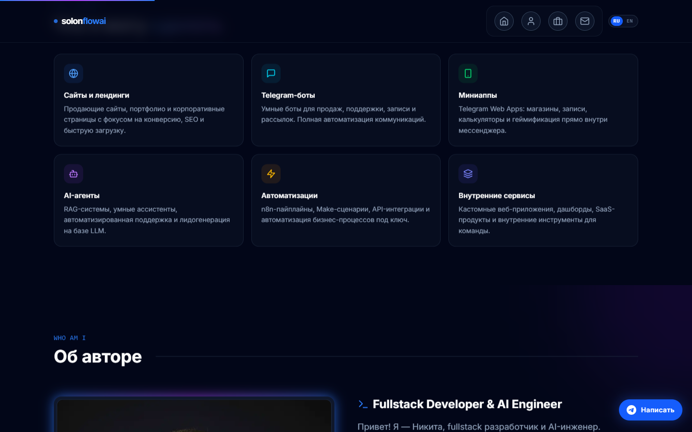
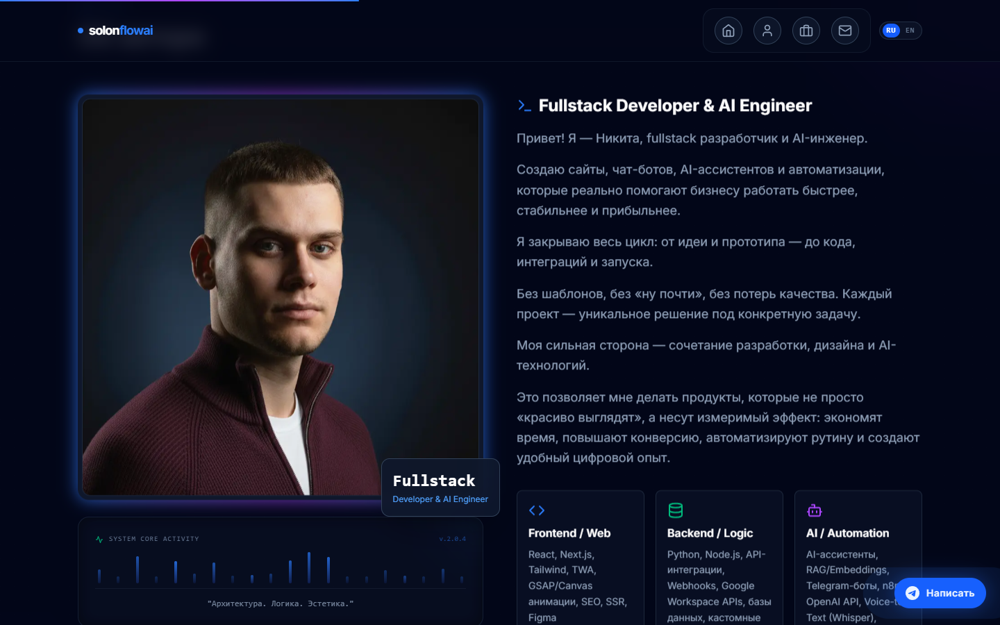
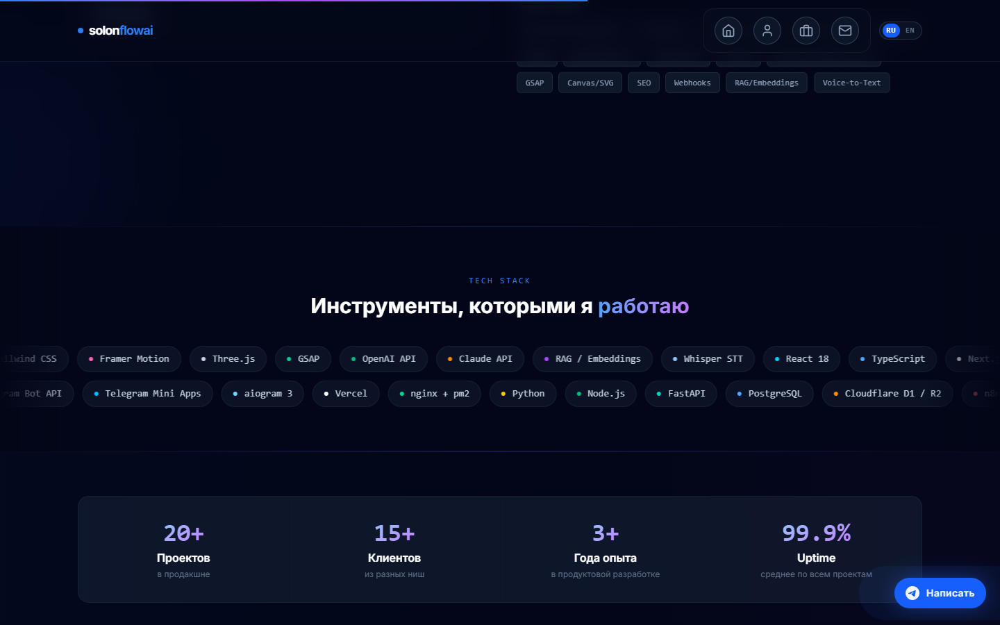
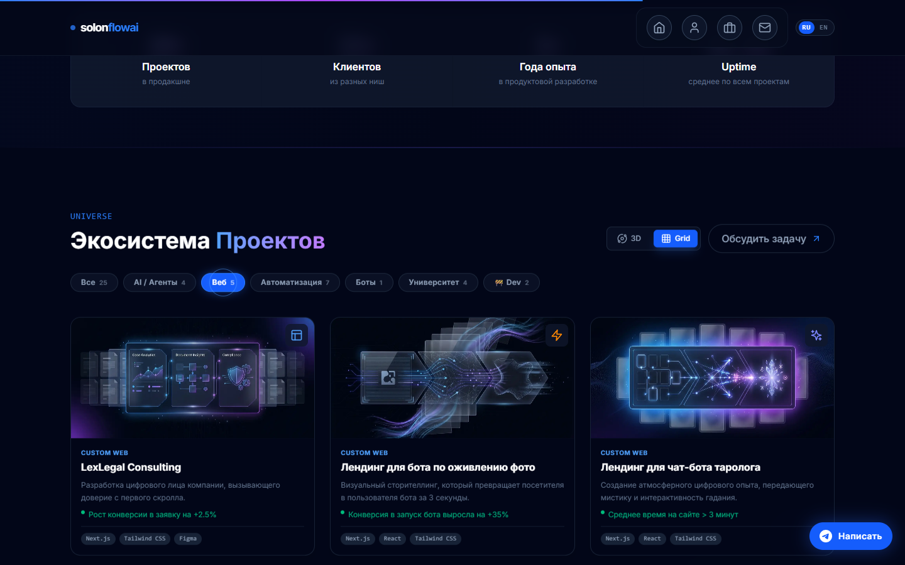
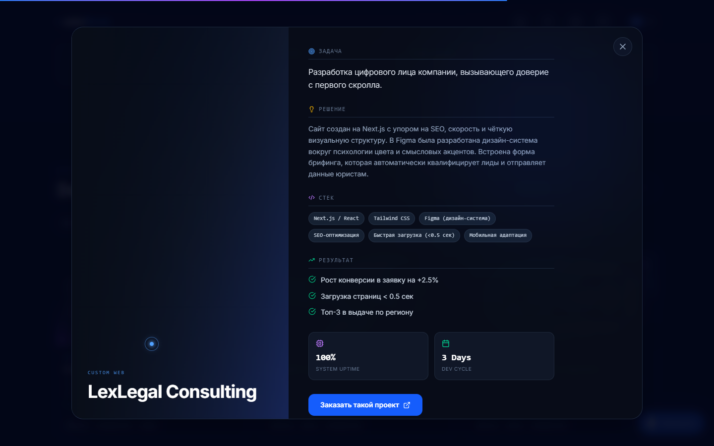
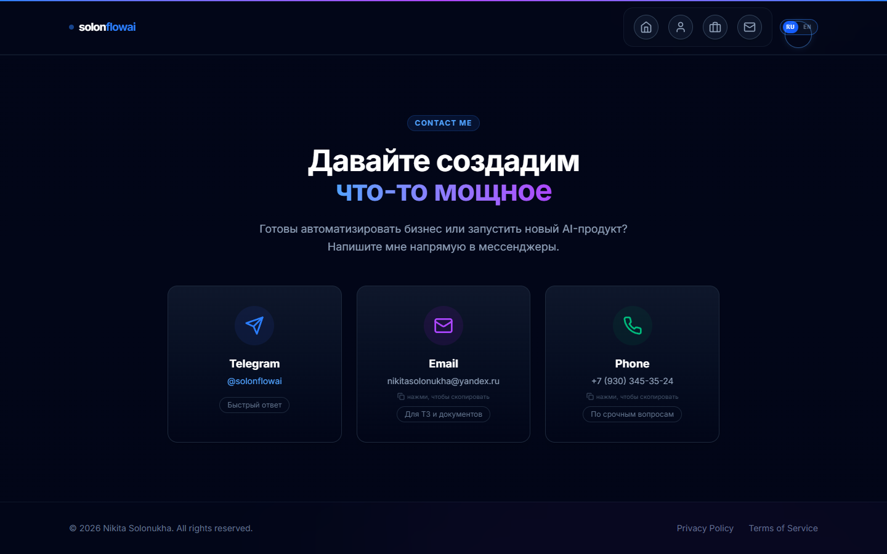
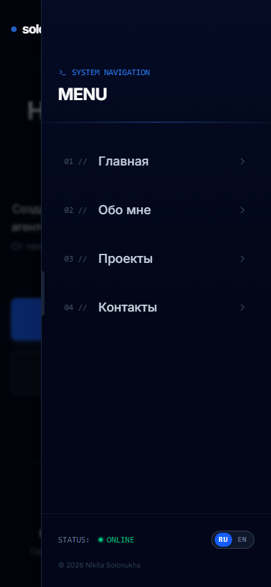

LIVE SCREENS







ORIGINAL / LIVE: кадры и видео получены непосредственно с публичного Vercel-сайта без редизайна. VERIFIED: 390/768/1440 без переполнения и JS errors; два видео проверены по размеру и длительности. KNOWN ISSUE: исходный asset women-strange.webp не загружается в одном мобильном состоянии каталога.